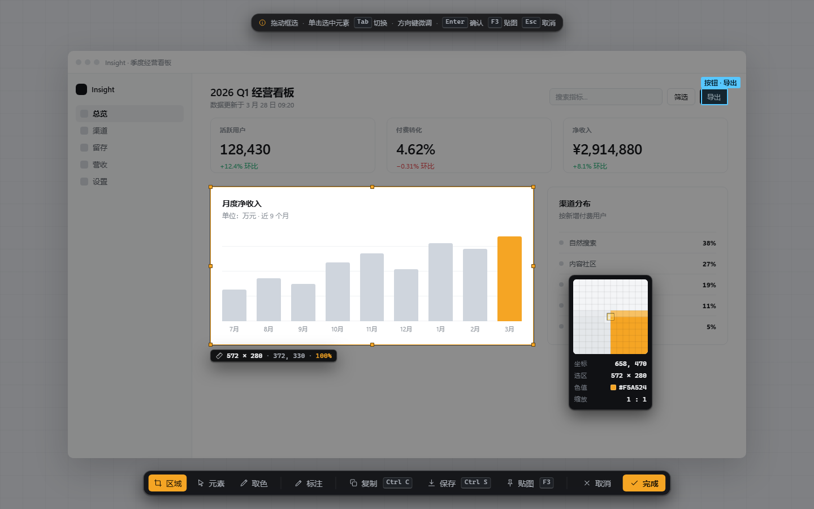

WhSnap · 界面设计语言 · v1.0
一套为像素级工具写的界面语言。暗色承载操作 —— 因为遮罩永远浮在别人的画面上； 纸色承载阅读 —— 因为设置与文档要能久看。全局只有一个交互色，且它绝不承担小字正文。

一个颜色做全部交互
Signal Amber #F5A524 是唯一的"点我"信号。它只做填充、描边、焦点环与量测标记 —— #F5A524 在浅底上对比度不足，所以琥珀是一族：暗底用亮档，浅底要写小字时换 #8A5A0A（5.4:1），或用墨字 + 琥珀下划线。
暗色优先，纸色阅读
遮罩和工具条要压住任意桌面内容，所以是暗的；设置、文档、向导是长时间阅读的面，所以是纸色的。同一套令牌，两种音量。
阴影只属于"浮在不可控内容之上"
浮动工具条、放大镜、托盘菜单、对话框可以用阴影；按钮、卡片、列表行、文字永远没有阴影。深度主要来自表面色阶 + 1px 发丝线。
数字一律等宽
坐标、尺寸、色值、百分比、快捷键全部走 Cascadia Code 并开启 tabular-nums —— 读数在跳动时不会左右抖。
两级圆角语法
控件 6px、卡片 10px、面板与浮动条 14px。全圆只给状态与连续量（状态点、状态胶囊、开关轨道、滑杆握把）；一切动作（按钮、工具键、CTA）都是方的 —— 圆的是"读的"，方的是"点的"。CTA 绝不用胶囊。
面积优先于描边
需要区分先换表面色阶（暗 ↔ 更暗 ↔ 纸），再考虑加线。一个界面里可见的 1px 线越少，越像仪器；越多，越像表单。
Obsidian · 暗色机壳
Paper · 纸色阅读面
Signal · 强调与语义
显示字号用负字距（"-0.2 → -0.4px"）压紧标题；而小号大写标签反过来用正字距（"+0.4px"）拉开呼吸 —— 两条规则方向相反，但都是为了让"读"和"看"分开。 界面基准 14px，不是 16px：这是桌面工具的密度，不是网页的密度。
给 WPF 的移植规则：Theme.xaml 里的键名与 CSS 变量一一对应（连字符换驼峰）。 迁移时只改 Theme.xaml，不动任何界面代码 —— 这套语言的成本控制就靠这一条： 界面里不允许出现字面量色值。
字体：Segoe UI Variable 与 Cascadia Code 都是 Windows 11 自带；在 Win10 上自动落到 Segoe UI / Consolas，字重阶梯不塌。